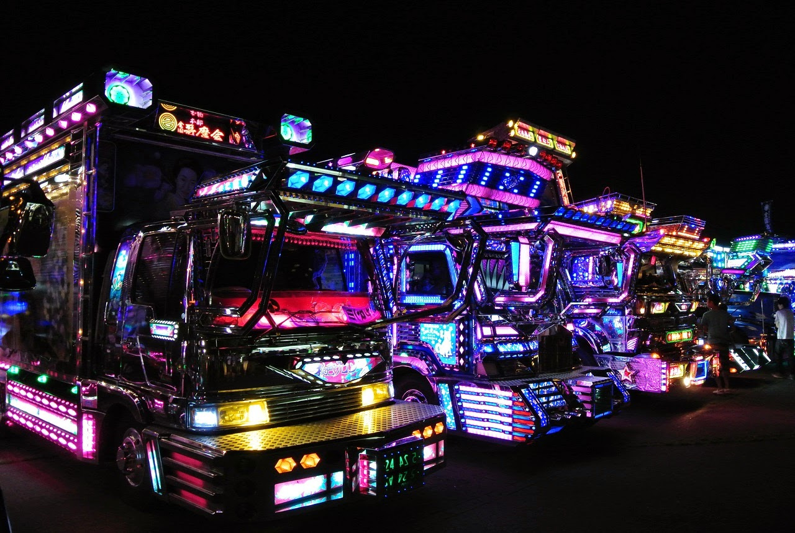

Изначально этот молодой стиль тюнинга зародился среди otaku — повёрнутых на манге (комиксах) и
аниме (мультфильмах) японцев. Они начали украшать свои автомобили соответствующими рисунками и
аксессуарами.

Bosozoku — символ подпольной автомобильной культуры Страны восходящего солнца, но термин это немного неверный. В буквальном переводе он означает «жестокая банда» и изначально относится к культуре байкеров-отморозков.

Происходит от английского «decoration truck» — украшенный грузовик. Хром, лампочки, много. Вот что такое «декотора» в трёх словах. Это движение появилось в 70-е годы в среде японских водил, которые возили рыбу. Они как чинили, так и украшали свои машины всем, что попадалось под руку.

Ещё один вариант транспорта для реальных и импровизированных членов японских банд. В отличие от оборванцев-беспредельников bosozoku, на bippo (японцы так выговаривают известную аббревиатуру «ви-ай-пи») ездят респектабельные представители японской мафии Якудза и персонажи, им подражающие.
Стили тюнинга
Itasha
Bosozoku
Dekotora
Bippo